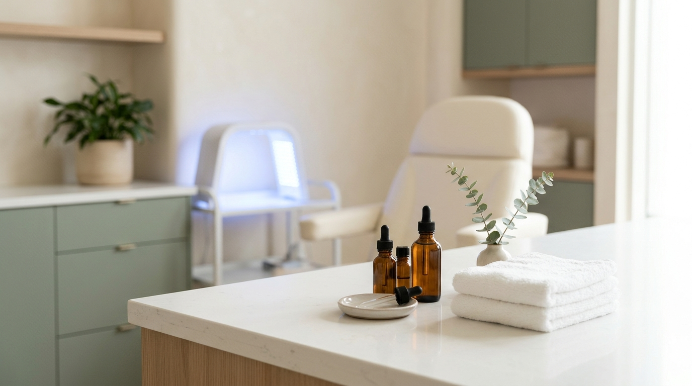
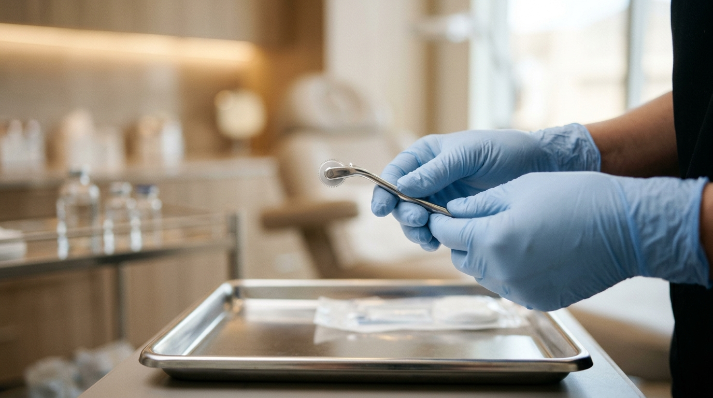

Understanding Acne & Breakout Dynamics
Acne vulgaris is one of the most common skin conditions worldwide, affecting adolescents and adults alike across different climates and lifestyles.
At its core, acne develops when hair follicles become plugged by dead skin cells and excess sebum (oil). When bacteria (Cutibacterium acnes) flourish within these trapped plugs, inflammation, redness, and papules can form.
Rather than scrubbing aggressively—which weakens the skin barrier and triggers secondary rebound oil production—modern aesthetic dermatology focuses on gentle exfoliation, anti-inflammatory balancing, and soothing hydration.

Common Acne Concerns & Scar Patterns
Different types of breakouts demand distinct consideration to prevent scarring and sustain long-term barrier health.
Comedonal Acne
Blackheads and whiteheads resulting from clogged sebum follicles without acute swelling, requiring gentle salicylic acid exfoliation.
Inflammatory Breakouts
Tender papules and pustules characterized by surrounding redness, demanding barrier-supporting anti-inflammatory sessions.
Post-Acne Erythema (PIE)
Red or purplish residual marks left after inflammation has subsided, caused by damaged microscopic capillaries.

Understanding Acne Scars
True acne scarring occurs when deep cystic inflammation damages collagen architecture in the dermal layer.
Rolling Scars: Broad depressions with sloping edges that create a wave-like texture across cheeks.
Boxcar Scars: Defined depressions with sharp vertical edges that benefit from micro-resurfacing.
Ice-Pick Scars: Deep, narrow columns that extend through the dermis, requiring professional evaluation by an experienced specialist.
Management options such as microneedling, chemical peels, and fractional skin conditioning aim to stimulate collagen synthesis to gradually smooth the skin surface.
Acne Care Treatment Categories
These non-surgical aesthetic categories are discussed during individual consultations to target specific stages of breakout activity.
1. Clarifying Chemical Peels
Utilises salicylic acid (BHA) and mandelic acid formulas that penetrate oil glands to clear stubborn debris and reduce shine without stripping moisture.
2. Medical Facials & Extraction
Hygienic extraction of closed comedones performed with sterile implements, combined with soothing antibacterial LED light exposure.
3. Microneedling For Scars
Precision micro-needle punctures induce mechanical skin renewal, encouraging gradual collagen remodelling in atrophic scar depressions.
4. Hydrating Barrier Therapy
Intense soothing masks infused with hyaluronic acid, centella asiatica, and ceramides to repair a barrier compromised by over-the-counter drying products.
5. Non-Ablative Laser Toning
Targeted gentle pulses designed to reduce post-breakout discoloration and calm persistent erythema under expert supervision.
6. Home Routine Guidance
Clear, tailored non-comedogenic home routines ensuring cleansers, moisturisers, and sunscreens do not clog sensitive pore networks.
General Skincare Guidance For Breakout-Prone Skin
Do Not Squeeze or Pick Breakouts
Manual squeezing forces bacteria and keratin deeper into tissue, significantly increasing the probability of permanent scarring and dark marks.
Avoid Harsh Abrasive Scrubs
Coarse walnut or apricot scrubs cause micro-abrasions that spread surface bacteria and exacerbate inflammation. Chemical exfoliants used under guidance are far safer.
Sunscreen Is Essential, Not Optional
UV radiation darkens post-acne blemishes into stubborn hyperpigmentation. Choose oil-free, non-comedogenic matte formulas suitable for Indian humidity.
Frequently Asked Questions Regarding Acne Care
Chemical peels assist in unblocking pores and clearing dead surface layers, which helps manage breakouts. However, they do not "cure" acne permanently, as acne is driven by hormones, sebum levels, and genetics.
Because collagen remodelling takes time, clinical assessments often suggest a series of 4 to 6 sessions spaced 4 weeks apart. Gradual improvement depends on scar depth and personal healing capacity.
Certain oral medications (such as oral isotretinoin) require pausing specific procedures (e.g., deep peels or microneedling) for a period. Always disclose medications during your initial consultation.